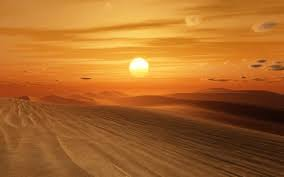

Travelling is an amazing way to learn a lot of things in life.
A lot of people around the world travel every year to many places.
Moreover, it is important to travel to humans. Some travel to learn more while some travel to take a break from their life.
No matter the reason, travelling opens a big door for us to explore the world beyond our imagination and indulge in many things.
Therefore, through this Essay on Travel, we will go through everything that makes travelling great.
A small town situated at a higher elevated position than its nearby plains or valleys is referred to as a hill station.
The climate is usually cold and a hill station has a low temperature.Visiting a hill station in the summers is the best getaway from the
scorching heat of the city you live in. In addition to that, the pleasant weather and temperature are suitable for meditation and health restoration activities.
Hill stations tend to have a cooler climate than surrounding areas, making them popular destinations for people seeking relief from the heat.
A hill station is a town located at a higher elevation than the nearby plain or valley. The term was used mostly in colonial Asia (particularly India),
but also in Africa (albeit rarely), for towns founded by European colonial rulers as refuges from the summer heat, up where temperatures are cooler.
A desert is a landscape where little precipitation occurs and, consequently, living conditions create unique biomes and ecosystems.
The lack of vegetation exposes the unprotected surface of the ground to denudation.Desert regions support very few plant or animal species. There are several different
definitions to describe a desert, but they are typically areas that receive extremely low amounts of rain.Desert biomes are the driest of all the biomes. In fact, the most
important characteristic of a desert is that it receives very little rainfall. Most deserts receive less than 300 mm a year compared to rainforests, which receive over 2,000 mm.
The desert also boasts one of the most recognized species of plant in the world. The cactus. The cactus has become a beautiful staple of the desert environment.

An island is a body of land surrounded by water. Continents are also surrounded by water, but because they are so big, they are not considered islands.
Australia, the smallest continent, is more than three times the size of Greenland, the largest island.Oceanic islands are usually colonized by only a few animal forms, chiefly seabirds and insects.
They are often covered with abundant vegetation.These islands' coastlines feature coral deposits and beautiful beaches. They have equatorial vegetation and are subjected to convectional rainfall.
These are mostly flat islands of India that rise only a few metres above sea level.An island is a piece of land smaller than a continent and surrounded by water. Based on the definition of an island, continents and islands differ only
in terms of size and the presence of geographical boundaries. Groups of related islands are called archipelagos.